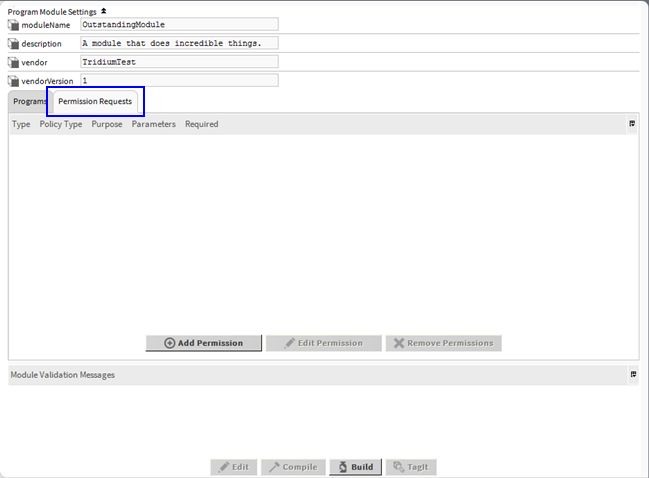
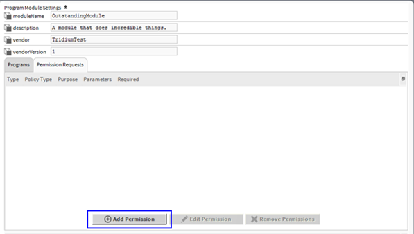
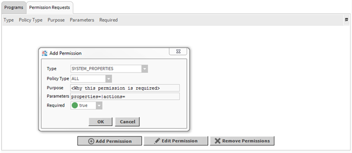
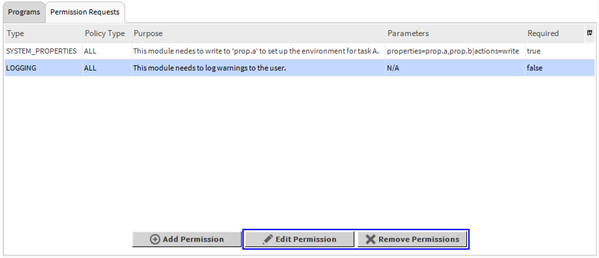
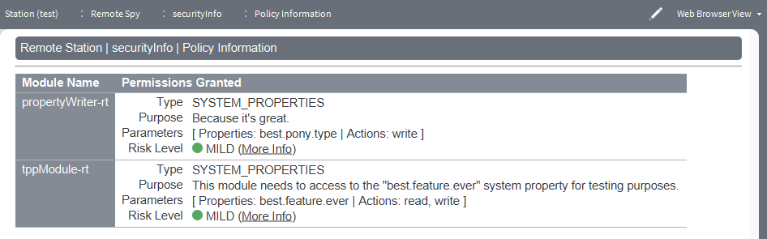

Niagara 4 introduced the use of Java’s Security Manager. The Security Manager improves security by restricting who can run certain sections of code – if a section of code is protected, only modules granted the required Permissions will be able to run it without triggering an AccessControlException. This allows us to protect sensitive methods that could affect core functionality or reveal sensitive data from being improperly used.
Some examples of actions that are restricted by the Security Manager are:
The Policy determines what permissions each module has. In Niagara 4.0 and Niagara 4.1, the Policy is determined by policy files located in “{niagara.home}/security/policy”. This Policy is static, and third party modules have no way to modify it to request the permissions they need to get past AccessControlExceptions they might encounter. For example, a third party module has no way to write to system properties.
In Niagara 4.2, the Policy is determined by the contents of a module’s “module.xml” file, in which the module can request which permissions it needs. This allows third party modules to request and be granted permissions that they would otherwise not have.
This document describes the process of requesting additional permissions: how to request a permission, which permissions can be requested, required vs. optional permissions, and how to request permissions for program modules. In addition, we describe how an end user can view which permissions a module has been granted.
This section is aimed at developers creating modules for Niagara. It describes how to request additional permissions for a module, and what permissions can be requested. In addition, it discusses how to turn off console messages during development, and how to localize the user facing content of a permission request.
When creating a Niagara module, a developer may run into AccessControlExceptions if they are trying to access restricted functionality. In these situations, it may be possible to have their module request additional permissions. This section described the process for requesting permissions for standard Niagara modules as well as for program modules.
When developing a standard Niagara module, the process for requesting additional permissions is simple. The first step is to create a file named ‘module-permissions.xml’ in your module’s development directory; this is the same directory the ‘module-include.xml’ file is in.
Figure 2-1 shows an example ‘module-permissions.xml’ file. Details about the various elements are given below.
<permissions>
<niagara-permission-groups type="station"> //Type can be "station" or "workbench"
<req-permission> // Required permission
<name>NETWORK_COMMUNICATION</name>
<purposeKey>This module needs to communicate with devices on port 1234.</purposeKey>
<parameters>
<parameter name="hosts" value="*"/>
<parameter name="ports" value="1234"/>
</parameters>
</req-permission>
<opt-permission> // Optional permission
<name>SET_SYSTEM_TIME</name>
<purposeKey>To do task X, this module needs to be able to set the system time.</purposeKey>
</opt-permission>
</niagara-permission-groups>
</permissions>
Figure 2-1: A sample module-permissions.xml
Important elements to note are:
<permissions> element. This is the root element of the permission request format.<niagara-permission-groups type="station"> element indicates that you are about to begin a block of permission requests. The ‘type’ attribute indicates which type of application to which to grant the permissions:
You can have multiple <niagara-permission-groups> blocks.
<req-permission> and <opt-permission> elements represent a request for one specific required or optional permission, respectively. The difference between required and optional permissions is described in section 2.1.3. Each permission request has a number of children:
<name> element. Required. This is the name of permission group being requested. This determines which permission will be granted to the module.<purposeKey> element. Required. This describes why the module needs this permission. Its goal is to help the end user determine if they are comfortable with the module having the requested permissions. The ‘purposeKey’ can be a lexicon key - it should correspond to an entry in the lexicon of the module requesting the permission. If the text in the <purposeKey> element doesn’t correspond to a lexicon entry, the text will be used as-is as a non-localizable description.<parameters> element. Optional. Certain permission groups accept parameters to narrow down the permission being requested. For example, when requesting to read or write system properties, you can specify which system properties you want access to.
<parameter name="hosts" value="*"/> element. The ‘name’ attribute is the parameter’s name, and the ‘value’ attribute is its value. The parameters for each permission group is documented in section 2.2.Program modules are subject to the same restrictions as standard modules. In order to be able to perform certain tasks, they may also need to request additional permissions. The program module builder offers an interface for adding permission requests to a program module before building it. This section describes the steps to follow to add a permission request to a program module.
In the ProgramModuleBuilder view, go to the “Permissions” tab (see Figure 2-2).

Figure 2-2: The ‘Permission Requests’ tab
To add permission request, click on the ‘Add Permission’ button, as shown in Figure 2-3.

Figure 2-3: The ‘Add Permission’ button
A dialog will appear (see Figure 2-4). Edit it as appropriate for the desired permission.

Figure 2-4: The permission request dialog
If any changes are required, a permission request can be added or removed using the ‘Edit Permission’ or ‘Remove Permissions’ command (see Figure 2-5). Although multiple permissions may be removed at once, only one can be edited at a time.

Figure 2-5: Editing or removing permissions
Permission request specify whether the permission is required or optional.
private static void initEnvironment()
{
try
{
myField = System.getenv("my_env_variable");
}
catch(AccessControlException e)
{
myField = System.getProperty("my.system.property");
}
}
private static String myField;
Figure 2-6: Properly handling an optional permission
In Niagara 4.2, all permissions requested by a module are automatically granted. As a result, the ‘optional’ vs ‘required’ settings has no real effect other than informing the end user how the permission is being used. In future iterations, however, end users may be given the option to accept or refuse to install a module when presented with its permission requests. In this situation, a user could choose to install a module, granting all required permissions but not granting certain optional permissions.
This section describes the permission groups that can be requested by a module. For each permission group, we give the permission name and severity, the underlying Java permissions that the group corresponds to, a description of what this permission allows, the parameters that can be associated with the permission, and the risk of granting that permission.
ACCESS_CLASS
Since Niagara 4.9. Requires the module requesting this permission group to be signed. Allows a module to access Java classes (code) in packages to which the module normally does not have access.
permission java.lang.RuntimePermission "accessClassInPackage.[packageName]";AUTHENTICATION
Allows a module to modify the principals associated with a subject.
permission javax.security.auth.AuthPermission "modifyPrincipals";permission com.tridium.nre.security.NiagaraBasicPermission "MODIFY_SESSION_IDS"permission com.tridium.nre.security.NiagaraBasicPermission "GET_AUTHENTICATED_USER"BACKUPS
Since Niagara 4.4. Allows a module to read and manage backup files as well as restore a system from a backup.
permission java.io.FilePermission "${niagara.user.home}${/}backups", "read,write";permission java.io.FilePermission "${niagara.user.home}${/}backups${/}-", "read,write,delete";permission com.tridium.nre.security.NiagaraBasicPermission "RESTORE_BACKUP";DIAGNOSTICS
This allows a module to control runtime characteristics and monitor runtime information about the Java Virtual Machine. This could allow a module to enable various ‘verbose’ modes to access information about the class loading or memory systems, or view a list of all loaded class names, etc…
permission java.lang.management.ManagementPermission "control";permission java.lang.management.ManagementPermission "monitor";GET_ENVIRONMENT_VARIABLES
Allows a module to read the value of an environment variable.
permission java.lang.RuntimePermission "getenv.[variableName]";LOAD_LIBRARIES
Allows a module to dynamically load a native code library. This allows the module to make use of pre-existing, well-tested libraries, or other external libraries.
permission java.lang.RuntimePermission "loadLibrary.[libraryName]";LOGGING
Allows a module to change the logging/debug settings, either by changing what severity of message is displayed or formatting the output.
permission java.io.FilePermission "${niagara.user.home}${/}logging", "read,write";permission java.io.FilePermission "${niagara.user.home}${/}logging${/}-", "read,write";permission java.util.logging.LoggingPermission "control";MANAGE_EXECUTION
Allows a module to modify the behaviour of any thread in the system, including system threads. This could include stopping, starting, renaming, setting the priority, getting the class loader for a particular class, setting the context class loader, override methods used to get or set the context class loader, etc…
permission java.lang.RuntimePermission "modifyThread";permission java.lang.RuntimePermission "modifyThreadGroup";permission java.lang.RuntimePermission "setContextClassLoader";permission java.lang.RuntimePermission "enableContextClassLoaderOverride"; (since Niagara 4.9)permission java.lang.RuntimePermission "getClassLoader"; (since Niagara 4.9)MBEAN_PERMISSION
Since Niagara 4.9. Requires the module requesting this permission group to be signed. Provides for MBeanPermission, MBeanTrustPermission, and MBeanServerPermission. These permissions control access to MBeanServer operations. The Niagara Security Manager requires operations on an MBean Server to have the caller’s permissions imply an MBeanPermission appropriate for the operation. This is described in detail in the documentation for the Java MBeanServer interface. The MBeanTrustPermission controls access to registering MBeans on an MBean Server. Creating an MBeanServer requires the “createMBeanServer” or “newMBeanServer” permission of the MBeanServerPermission.
permission java.lang.MBeanPermission;permission java.lang.MBeanTrustPermission;permission java.lang.MBeanServerPermission;MODIFY_IO_STREAMS
Allows a module to modify the standard input, output and error streams used by the system, redirecting the input/output to another location.
permission java.lang.RuntimePermission "setIO";NETWORK_COMMUNICATION
Allows a module to open connections to and accept connections from the specified host on the specified ports. In addition, the URLPermission is a convenience for HTTP(S) connections. It allows access to all HTTP(S) resources recursively at the specified host on the specified ports, as well as all HTTP actions and request headers.
permission com.tridium.nre.security.NiagaraSocketPermission "[host1:ports]" "[type]";permission com.tridium.nre.security.NiagaraSocketPermission "[host2:ports]" "[type]";permission java.net.NetPermissions "getProxySelector" (since Niagara 4.3)permission java.net.NetPermissions "getNetworkInformation" (since Niagara 4.3)permission org.bouncycastle.crypto.CryptoServicesPermission "exportPrivateKey" (since Niagara 4.6)permission java.net.URLPermission "[http://<host>:<port>]" "[*:*]"; (since Niagara 4.9)permission java.net.URLPermission "[https://<host>:<port>]" "[*:*]"; (since Niagara 4.9)permission java.net.URLPermission "[http://<host>:<port>/-]" "[*:*]"; (since Niagara 4.9)permission java.net.URLPermission "[https://<host>:<port>/-]" "[*:*]"; (since Niagara 4.9)hosts (required): The hosts to/from which we can open/accept a connection.
This should be a comma-separated list, each item of which should follow the format described in the Java SocketPermission documentation. Although wildcard domains (“*” or “*.something”) are permitted, the security best practice is to be as specific as possible when specifying your host. If access to a single host is required, only that host should be included in the request.
In some cases, specifying a domain other than a wildcard can cause performance issues, due to the way Java SocketPermission does DNS lookups. In this situation, setting the “niagara.socketPermission.noDns” system property to “true” can help performance, but in certain situations can cause a valid SocketPermission request to be rejected.
Because of the security impact, wildcard domains should only be used if required, or if it has been determined that non-wildcard domains are causing issues.
ports (required): A comma-separated list of the ports over which we can connect to the host. This should be a comma-separated list, each item of which should follow the format describe in [Java SocketPermission documentation] (https://docs.oracle.com/javase/8/docs/api/java/net/SocketPermission.html).
REFLECTION Allows a module to use reflection. Adds the suppressAccessChecks named permission group, which is described in the Java API under java.lang.reflect.ReflectPermission. * Java Permissions: * permission java.lang.reflect.ReflectPermission * Risk Level: SEVERE * Risk: Granting this permission could allow an attacker to gain access to and modify private areas of the code. This can allow the attacker to gain access to private information, or alter data, which could cause the user to see incorrect data, or could even cause the system to become unstable or shut down. * Parameters: None.
RUNTIME_EXECUTION Allows a module to execute files at runtime.
permission java.io.FilePermission${system.property.name}. The system property must be present at startup. File separators can be specified with the special key ${/}. File path separators can be specified with the special key ${:}. Examples:
c:\path\to\file1.ext;d:\path\to\file2.ext;c:\path\to\file3.ext (Windows)path/to/file1.ext:path/to/file2.ext:path/to/file3.ext (Linux and QNX)${java.io.tmp}${/}file1.ext${:}${java.io.tmp}${/}file2.ext (cross platform)SET_SYSTEM_TIME
Allows a module to modify the system time.
permission com.tridium.nre.security.NiagaraBasicPermission "SET_TIME";SHUTDOWN_HOOKS Allows a module to execute special code when the JVM is shutting down. This could be special cleanup operations, code to send out a warning message to an administrator, saving the state of the application, etc…
permission java.lang.RuntimePermission "shutdownHooks";SIGNING Permission group to be declared by any 3rd party module wishing to make certificate signing requests to the Signing Service from their codebase. Implementing IRequesterComponent will enable a components child BAbstractSigningRequester to interact with the signing service. Part of this process is providing your certificate passwords in IRequesterComponent#supplyCertificatePassword(). To protect access to the password returned from this method, perform the following:
Declare this permission group with the moduleName parameter populated with your modules name:
<req-permission>
<name>SIGNING</name>
<purposeKey>Protect my signed certificate passwords</purposeKey>
<parameters>
<parameter name="moduleName" value="foo"/>
</parameters>
</req-permission>
You will then need to make the following permission check in IRequesterComponent#supplyCertificatePassword():
SecurityManager sm = System.getSecurityManager();
if (sm != null)
{
sm.checkPermission(new SigningPasswordPermission(TYPE.getTypeSpec().getModuleName()));
}
Now only the framework itself, and modules declaring a moduleName parameter value of ‘foo’ can invoke supplyCertificatePassword(); and gain access to the certificate password value.
SYSTEM_PROPERTIES
Allows a module to read or write the value of system properties. This could be used to make decisions based on OS information, or other information stored in the system properties.
permission java.util.PropertyPermission "[propertyName]", "read,write";THIRD_PARTY_PERMISSION
Since Niagara 4.9. Requires the module requesting this permission group to be signed. This permission allows code to access an arbitrary, third-party permission that is not in Java, Niagara, or BouncyCastle.
UI
Allows a module to perform various UI related tasks, such as creating a system tray icon, or creating a window that always displays on top.
permission java.awt.AWTPermission "accessClipboard";permission java.awt.AWTPermission "accessSystemTray";permission java.awt.AWTPermission "fullScreenExclusive";permission java.awt.AWTPermission "setWindowAlwaysOnTop";permission java.awt.AWTPermission "showWindowWithoutWarningBanner";KEY_STORE
Allows a module to read or write keys and certificates in the Niagara key stores. Note: All modules are granted read permission to userTrustStore and systemTrustStore by default.
permission java.util.PropertyPermission "[keystore]", "read,write";In this section, we discuss various things you can do to improve the development process, or improve the experience of your end users.
As described in section 3.1, if the registry has changed, the user will be notified of any additional permissions that a module has requested in the console output. During development, this can mean a lot of output every time a change is made and the application restarted.
To suppress this output, you can set the “niagara.security.logPermissionGroups” system property to “false”. This must be present on startup, so it should be included in the “system.properties” file or added to the command line when starting the application. This only works if the “developer” license feature is present.
Permission requests are fully localizable. As a developer of a new module, the main concern is ensuring that any permission requests created are localizable. This means that the <purposeKey> element for each permission request in the “module-permissions.xml” file should, ideally, correspond to a lexicon entry in the module’s “module.lexicon” file (see Figure 2‑7 and Figure 2‑8). If the text in the <purposeKey> element doesn’t correspond to a lexicon entry, the text will be used as-is as a non-localizable description.
...
<req-permission>
<name>NETWORK_COMMUNICATION</name>
<purposeKey>networkComm.purpose</purposeKey>
<parameters>
<parameter name="hosts" value="*.domain.net"/>
<parameter name="ports" value="25,465"/>
</parameters>
</req-permission>
...
Figure 2‑7: Example of a lexicon key reference in module-permissions.xml
...
networkComm.purpose=This module communicates with *.domain.net servers on ports 25 and 465.
...
Figure 2‑8: Example module.lexicon entry
The <purposeKey> is the only field whose localization is handled by the module itself. All other text associated with permission requests are localized by entries in the “baja” module’s lexicon. Some examples of user facing text that can be localized are:
All of these can be found in the baja lexicon, and start with “permissions.”.
Starting in Niagara 4, the Java Security Manager was turned on in order to protect core functionality and sensitive files. Starting in Niagara 4.2, modules can request additional permissions to perform actions that the Niagara Policy does not allow by default. When installing a new Niagara system, or when installing new modules to an existing Niagara system, it is important to ensure that the permissions that modules are requesting are consistent with their functionality.
There are two ways for an end user to check what permissions are being requested by a module: console output, and the new Policy spy page.
When starting up an application, such as Workbench or a station, we check whether the registry has changed. This can happened when starting up a fresh installation for the first time, or when installing a new module to an existing installation. If the registry has changed, all permissions requested by all modules will be printed to the console/application director output, along with the severity of the permission, associated parameters and the reason the module needs the permission, as shown in Figure 3‑1.
Figure 3‑1: Permission requests printed out to the console
In addition to the console output, the permissions granted to a module may be viewed via the Policy spy page (see Figure 3‑2). The Policy spy can be viewed at any time, and gives more detailed information that the console output, including a description of the risks associated with each permissions. The Policy spy page can be found at Spy > securityInfo > Policy Spy.

Figure 3‑2: The Policy spy page